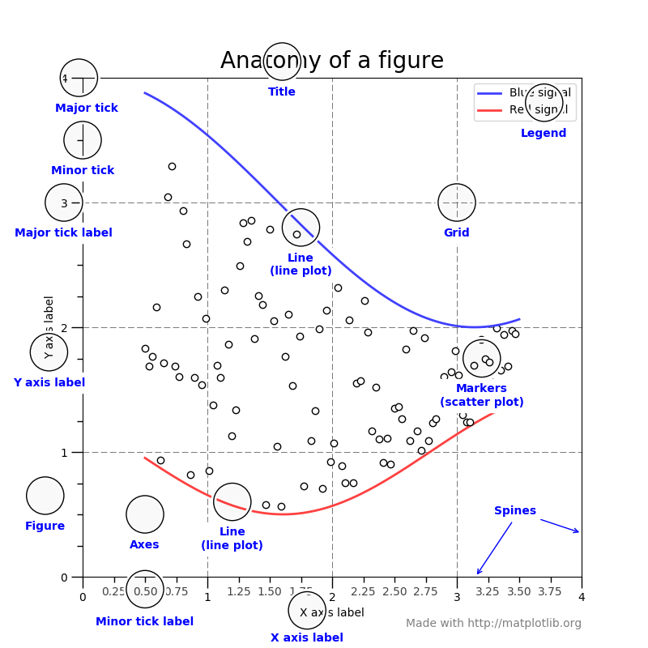

Introduction to Matplotlib
Before we start
Project 2 release
- Project 2 is being released this week (Wednesday 19 at 12h00)
- The tasks require you to solve a scientific problem and complete a template Notebook.
- You will have to write some code and some reflections on your code
- No use of autograding: follow the instructions on Blackboard
- Download from Blackboard
- Upload to Noteable for editing
- Complete the asssignment
- Download and upload back to the submission point on Blackboard
- The assignment will be marked by your tutors.
Before we start
Project 2 release
Tips:
- Write clear code (comments, variable names, structure) Follow the advice provided during the tutorials.
- Do not overcomplicate (all tasks have relatively simplease solutions).
- Demonstrate understanding (using comments and in the mandatory Markdown explanation boxes)
Today
- Basics of plotting in Python using
matplotlib - Reading and plotting from file
- Some extra decorating tasks
What is Matplotlib?
Matplotlib is a powerful and widely-used Python library for creating static, animated, and interactive visualizations.
Why do we need plotting? - Visualize patterns in data - Communicate results effectively - Explore relationships between variables - Present findings to others

Getting Started
Question: How do we import matplotlib for plotting?
The most widespread convention is to use the shorthand plt to refer to the pyplot submodule.
This was created to replicate the functionality of MATLAB, which many early Python adopters were familiar with.
Two Main Approaches
Problem: There are different ways to create plots in matplotlib. Which should we choose?
Pyplot Interface
plt.plot(x, y)
plt.show()- MATLAB-style syntax (if you know MATLAB)
- Quick and simple for basic plots
- Often seen in online examples
Two Main Approaches
Object-Oriented Approach
fig, ax = plt.subplots()
ax.plot(x, y)- More modern and explicit
figandaxare Python objects: with the.you can explore all the things they can do and they can be passed to functions- Recommended approach
Understanding Figure and Axes
Question: What’s the difference between a Figure and Axes?
- Figure: The entire canvas - like a piece of paper
- Axes: The plotting area with x-y coordinates - where data goes
What Types of Plots Can We Create?
Problem: We have different types of data - how do we choose the right visualization?
Continuous Relationships
ax.plot(x, y) # Line plot
ax.scatter(x, y) # Scatter plotWhen to use: Time series, correlations
Distributions
ax.hist(data) # Histogram
ax.bar(categories, values) # Bar plotWhen to use: Frequency distributions, comparisons
Real Example: Combining Visualizations
Scenario: We have measurements and a fitted model. How do we show both?
Customising plots
Problem: Default plots often look bland. How do we make them professional?
Examples
Have a look at matplotlib examples to see the raneg of things that are possible
Anatomy of a Figure

Understanding these components helps you customize any part of your plot
Workshop today
- In the lecture, you will find some inline Exercises A and B demonstrating the rudimenst of plotting: we will go through this together to discover the essential syntax.
- You will then be able to complete Exercise C where we read in some data and plot it.
- You will finally be able to experiment with matplotlib in a separate sheet named fun_matplotlib_decoration.ipynb